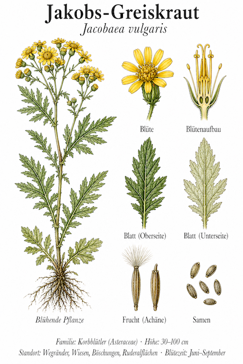
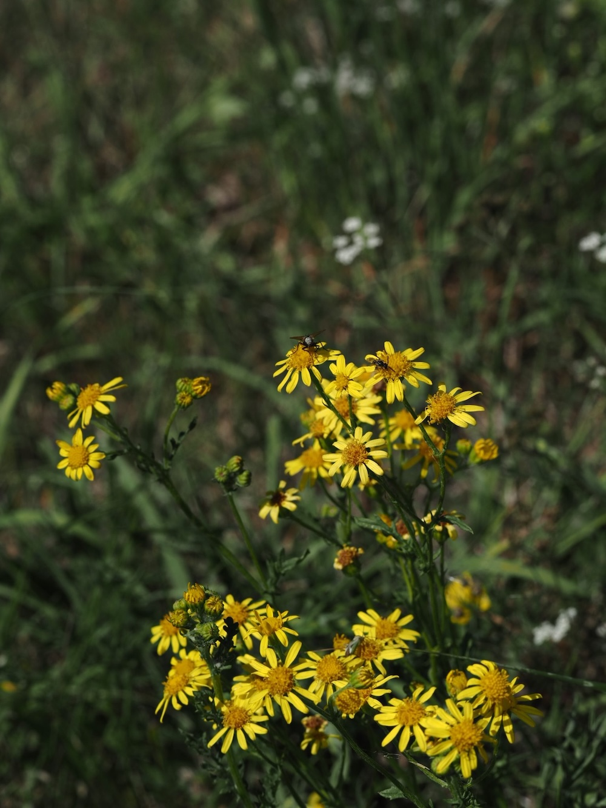
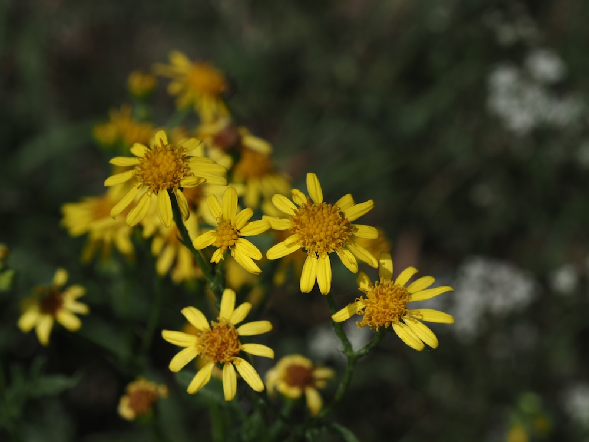

Tödliche Schönheit für Pferde
Das Jakobs-Greiskraut ist die meistgefürchtete Wiesenpflanze der Pferdehalter. Es enthält Pyrrolizidinalkaloide, die in der Leber zu giftigen Stoffen umgewandelt werden — bei Pferden, Rindern und sogar Menschen. Frische Pflanzen werden vom Vieh meist gemieden (sie schmecken bitter), aber im Heu verschwindet der bittere Geschmack — und dann fressen sie unbedacht. Die Wirkung ist langsam, aber bei dauerhafter Aufnahme tödlich.
Tagpfauenauge-Kinderzimmer
Trotz seiner Gefährlichkeit für Vieh ist Jakobs-Greiskraut eine wichtige Pflanze für Schmetterlinge — vor allem für die Raupen mehrerer Bär-Arten. Die Raupen können die Giftstoffe der Pflanze in ihrem Körper speichern und werden so wiederum für Vögel ungenießbar. Eine perfekte Allianz: Die Pflanze gibt der Raupe ihren Schutz, die Raupe verteilt die Pflanzensamen.